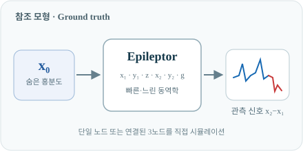
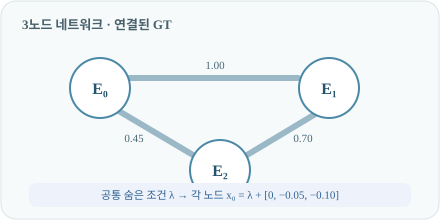
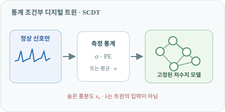

LAB / COLLABORATIVE RESEARCH / AICP 2026
Epileptor Digital Twin
정상 신호만 배운 디지털 트윈은 정상 상태가 무너지는 위치를 찾을 수 있을까요? 참조 모형과 실험 방법을 먼저 살펴보고, 실제 결과를 직접 탐색해 보세요.
합성 시뮬레이션 연구입니다. 환자 데이터나 임상 발작 예측 결과가 아닙니다.
정상 상태는 어디에서 무너질까?
뇌 활동을 수학적으로 표현한 Epileptor에서 정상 신호를 만듭니다. 이 신호만 학습한 통계 조건부 디지털 트윈(SCDT)이 새로운 조건에서도 정상 상태를 유지하는지 살펴봅니다. 관심 대상은 발작 파형의 재현이 아니라 정상 동역학이 사라지기 시작하는 경계입니다.
실험 흐름을 좌우로 움직여 보기 ↔
이 페이지의 ‘생존율’은 사람의 생존율이 아니라 정해진 관찰 시간 동안 정상으로 남은 시뮬레이션 궤적의 비율입니다.
무엇을 기준으로 비교하나요?
Ground truth(GT)는 환자 기록이 아니라 Epileptor 수학 모형을 직접 시뮬레이션한 결과입니다. 단일 노드는 숨은 흥분성 파라미터 x₀를 바꾸고, 3노드는 삼각형으로 연결된 모형들의 공통 조건 λ를 움직입니다. 그 결과 정상 신호와 정상 이탈 신호가 만들어집니다. 이 파라미터들은 비교와 그림에만 사용하며 디지털 트윈의 입력에는 넣지 않습니다.


숨은 흥분도 x₀를 움직여 보세요
정상 조건에서 준비한 단일 노드 Epileptor의 x₀를 14개 값 중에서 바꾸고 140초 동안 관찰합니다. 파랑은 정상형 신호, 빨강은 −0.5 아래로 처음 내려간 시점부터 마지막 교차 직후까지의 발작 유사 구간입니다.
파형을 좌우로 움직여 자세히 보기 ↔
자료를 불러오는 중입니다.
이것은 같은 초기 조건과 잡음으로 새로 만든 시각화용 단일 궤적입니다. 아래의 30회 반복 생존율 집계와 별개이며, 빨강은 임상 발작 진단을 뜻하지 않습니다. x₀는 GT에만 쓰이고 SCDT에는 제공하지 않았습니다. 예시 궤적 생성 코드 ↗


모델을 어떻게 학습하고 시험했나요?
학습과 경계 시험에 쓰인 정보를 분리했습니다. 디지털 트윈은 정상 신호와 그 신호에서 측정한 통계값을 받고, 참조 모형의 숨은 파라미터나 전이 이후 신호는 보지 않습니다.

- 01
정상 자료 만들기
Epileptor의 정상 조건에서 합성 신호를 생성합니다. 단일 노드는 18개, 3노드는 52개의 정상 학습 기록을 사용했습니다.
- 02
측정 통계로 조건화하기
단일 노드는 신호 표준편차와 순열 엔트로피, 3노드는 노드 평균과 표준편차를 사용합니다. 숨은 흥분성 파라미터는 트윈에 제공하지 않습니다.
- 03
정상 자료로 모델 선택 후 고정하기
모델 선택은 별도의 정상 검증 기록으로 수행합니다. 선택한 저수지 설정을 고정한 뒤 통계 좌표를 바꿔 새 궤적을 생성합니다.
- 04
독립 궤적과 참조 모형 비교하기
각 좌표에서 30개 궤적이 정상으로 남는지 셉니다. GT도 별도로 시뮬레이션하고 같은 정상 이탈 규칙으로 평가합니다. 단일 노드는 140초, 3노드는 200초 관찰합니다.
GT와 트윈의 곡선을 같은 통계 축에 놓을 때는 정상 자료로 만든 보정식을 사용합니다. 학습 범위 밖의 축 위치에는 외삽이 포함됩니다.
이제 결과를 직접 살펴보세요.
슬라이더 또는 그래프의 점을 선택하세요. 먼저 그 좌표에서 생성한 예시 파형을 보고, 이어서 원래의 독립 30회 시험에서 정상으로 남은 개수를 확인할 수 있습니다. 이 슬라이더는 SCDT의 측정 통계 조건이며, 위의 x₀ 슬라이더는 GT의 숨은 흥분도를 움직입니다.
SINGLE NODE EPILEPTOR
신호의 흔들림이 커질 때
표준편차 σ와 순열 엔트로피를 함께 바꾸며 정상 이탈을 살펴봅니다.
그래프를 좌우로 움직여 자세히 보기 ↔
표준편차 σ · 커질수록 전이 방향 →
선택한 좌표의 생성 궤적
파형을 좌우로 움직여 자세히 보기 ↔
30회 반복 중 하나가 아닌, 고정 모델에서 별도로 생성한 예시 궤적입니다.
15 / 30 궤적이 정상 유지
나머지 궤적은 정상 이탈 기준에 걸렸습니다.
참조 모형(GT) 곡선은 Epileptor를 별도로 시험한 결과입니다. 가로축 정렬에는 정상 자료로 만든 보정식이 쓰였고 학습 범위 밖은 외삽입니다.
읽을 때 주의할 점
50% 경계가 참조 모형과 가까웠다는 결과입니다. 수학적 분기점 증명이나 임상 진단을 뜻하지 않습니다.
트윈 출력은 이탈 후 상·하한에 포화될 수 있습니다. 그 구간의 파형을 실제 발작 모사로 해석할 수 없습니다.
신뢰구간은 반복 궤적의 변동을 반영합니다. 모델 구조 전체의 불확실성을 포함하지 않으며, 정상 조건에서도 거짓 이탈이 있었습니다.
실험 조건과 한계: 단일 노드 상세 ↗ · 3노드 상세 ↗